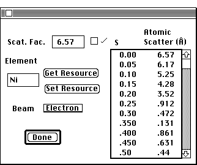

Distributed By: Virtual Labs
Electron and X-ray Scattering Factor Dialog Box
PATH...Edit Menu:Atomic Parameters:Periodic Table Dialog:Element Info
Dialog:(Atomic Scattering Factor)

Scattering Factor Dialog Box
This dialog provides the ability to view, edit and add electron and x-ray
scattering factors for individual elements. Each element can have its neutral
scattering potential and its more common ionic state scattering factors
stored within Desktop Microscopist. This Dialog Box is accessed from the
Atomic Info Dialog box by clicking on the Atomic Scattering Factor button.
Once in the Atomic Scattering Dialog, it is possible to view any atomic
scattering curve, both electron and x-ray, and to reset these values. It
is also easy to add desired resources.
To specify a new scattering curve type in a new element in the Element text
box or use the pop-up menu to select between the electron or x-ray scattering
curves. (Ionic crystals are designated after the symbol. Example: Al+3.
Absolute ionic states must be less than 10.)
After making the desired selections, click on the Get Resource button. If
there is a curve already available the new values will appear in the atomic
scattering list. However, if there are no lists stored in Desktop Microscopist,
the values will remain the same as the previous values. Type in the values
for the new element state and click on the Set Resource button to define
a new atomic scattering resource.
Note: The atomic scattering values are in units of Å-1 and are
listed as a function of s where s is defined as the value of sin(q)/l, where
q is the Bragg diffraction angle and l is the electron wavelength in Å.
Author: J.ames T.
Stanley
 Desktop
Manual:Dialog Boxes
Desktop
Manual:Dialog Boxes
Distributed By: Virtual Labs
Last Updated:1/12/96 Sat, Apr 27, 1996